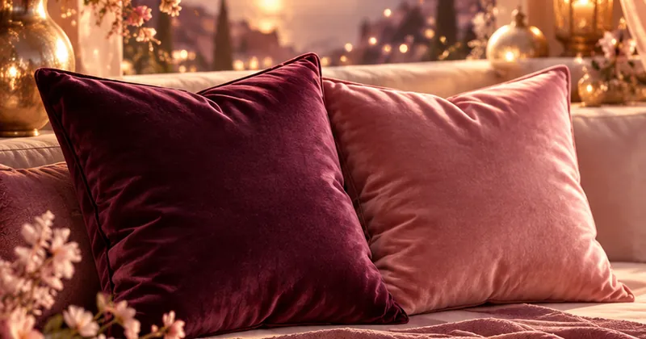

La roue des émotions
Mets un mot juste sur ce que tu ressens. Touche une émotion au centre de la roue, puis avance vers l’extérieur pour trouver la nuance la plus proche : la roue te dit ce que cette émotion t’apprend, le besoin qu’elle signale et la question à te poser.
6 émotions de base, 72 nuances. Gratuit. Ton journal reste dans ton navigateur, sur cet appareil.
Toutes les émotions de la roue
Sur téléphone, c’est souvent plus simple de choisir ici. Chaque famille part d’une émotion de base, puis se précise.
Mon journal des émotions
Note ton émotion du jour : au fil des semaines, tu verras ce qui revient, et ce dont tu as le plus souvent besoin.
Sans compte, ton journal reste sur cet appareil. Crée ton espace gratuit pour le garder partout et, si tu le souhaites, le relier à ton cycle.
Comprendre comment t’en servir
Une émotion bien nommée est déjà plus facile à traverser. La roue t’aide à trouver le mot juste, puis à écouter ce qu’il te dit.
Pars du centre
Au centre, les six émotions de base : joie, tristesse, peur, colère, surprise, dégoût. Choisis celle qui est la plus proche de ce que tu vis, même si ce n’est qu’approximatif.
Avance vers le mot juste
Chaque cercle précise un peu plus : de la tristesse à la déception, puis au découragement. Le bon mot est celui qui te fait dire « oui, c’est exactement ça ».

Écoute ce qu’elle te dit
Pour chaque émotion : ce qu’elle t’apprend, le besoin qu’elle signale, ce que tu peux sentir dans ton corps, une question à te poser et une phrase pour l’accueillir.
Questions fréquentes
Qu’est-ce que la roue des émotions ?
C’est un outil qui range les émotions en cercles : au centre, les grandes émotions de base, puis, en allant vers l’extérieur, des mots de plus en plus précis. Elle aide à passer de « je ne me sens pas bien » à « je me sens déçu·e » ou « je me sens seul·e », et donc à mieux comprendre ce dont tu as besoin.
Quelles sont les émotions de base ?
On retient souvent six émotions de base : la joie, la tristesse, la peur, la colère, la surprise et le dégoût. Elles se retrouvent dans toutes les cultures et se lisent sur le visage. Toutes les autres nuances, comme la fierté, la solitude ou la culpabilité, en découlent.
Comment utiliser la roue des émotions ?
Pars du centre : quelle grande émotion est la plus proche de ce que tu vis ? Puis avance vers l’extérieur pour trouver le mot le plus juste. Lis ensuite ce que cette émotion t’apprend, le besoin qu’elle signale et la question à te poser. Tu peux noter ton émotion du jour pour voir, au fil des semaines, ce qui revient.
Pourquoi nommer ses émotions aide-t-il ?
Mettre un mot précis sur ce que tu ressens aide souvent à prendre un peu de recul : l’émotion devient quelque chose que tu observes, plutôt que quelque chose qui t’emporte. Le mot juste montre aussi le besoin qui se cache derrière, et ce que tu peux faire pour y répondre.
Quelle différence entre émotion et sentiment ?
L’émotion est une vague courte qui traverse le corps, comme la colère ou la peur. Le sentiment s’installe dans la durée, nourri par les pensées et l’histoire, comme la rancœur ou la nostalgie. La roue t’aide à nommer les deux.
Pour aller plus loin
Lis la différence entre émotion et sentiment, ce que ton corps fait quand tu ressens et les 5 éléments et les émotions. Pour voir si une émotion revient d’une génération à l’autre, essaie le fil d’or.
Un outil de connaissance de soi, en complément de tout suivi médical. Si une émotion pèse sur ton quotidien, parles-en à une personne de confiance ou à un·e professionnel·le de l’accompagnement.